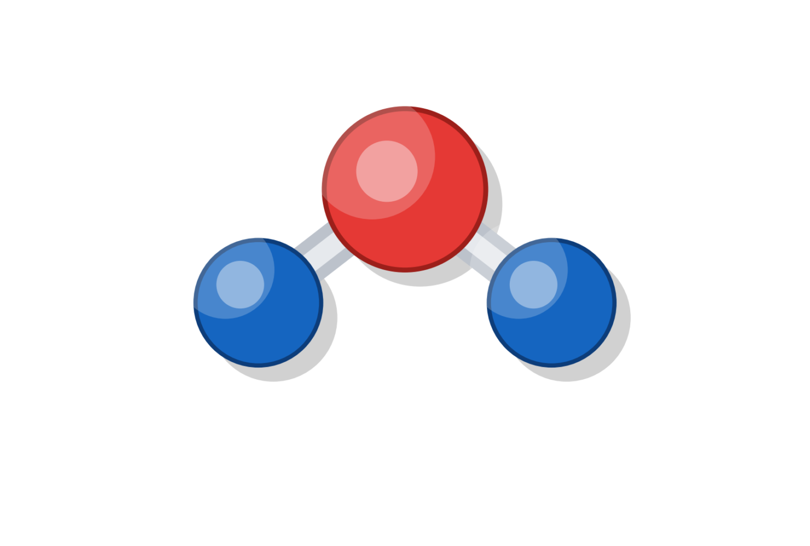
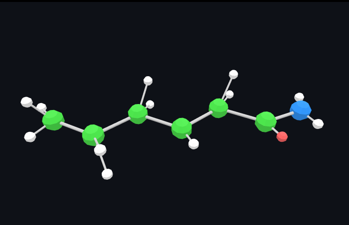
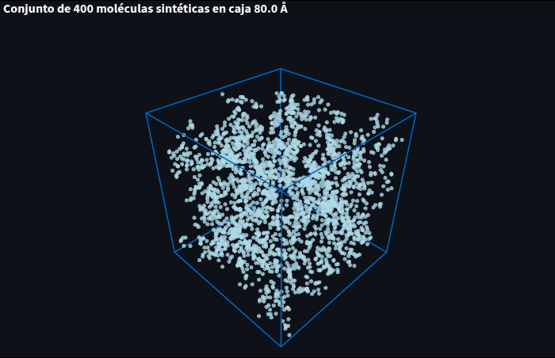

Molécula 3D (H₂O)
Vista 3D generada por el script del Parcial 1.

Vista 3D generada por el script del Parcial 1.
Proyección 2D estilizada.
Nube de puntos de posiciones atómicas simuladas.
Caja de simulación con partículas (moléculas) distribuidas.
Espectros simulados con inversión de eje de número de onda.
Curvas comparativas de energía en función del % de H₂O.

Función de distribución radial (RDF) simulada.

Comparación espectral A vs B (simulada).

Espacio para imágenes adicionales de “Otros parámetros”.


.png)
.png)
.png)


Selecciona un literal en la barra lateral para ver sus imágenes
Ajustes lineal y cuadrático sobre P ≈ K(1–2ν)·ε.
Relación fase–strain (proxy) y estimación de pe eficaz.
Selección de cresta en |F(k)| a fdom y ajuste E(k)~k².
Modelo parabólico isotrópico con m* del L3.
Comparación del modelo armónico extendido (ramas acústica y ópticas) con series experimentales DAS normalizadas.
Basado en la ecuación de Sellmeier (Malitson, 1965) y un modelo empírico de extinción. Se muestran las curvas n(λ) y k(λ) para el rango 0.2–3.0 µm, con la región visible destacada.
Cálculo de la densidad de estados (DOS), densidad conjunta de estados (JDOS) y magnitud del campo dipolar a lo largo de una línea de observación. Si no hay Excel de entrada, se generan datos sintéticos razonables.
Respuesta de saturación del momento magnético bajo un campo externo. Se muestra la curva teórica y una medición experimental simulada con ruido leve.
resultados_lit08.xlsx.
Funciones de onda — p.ej. lit9_ondas_SiO2_*.png.

Fase sintética — mapas y cortes.


Comparación de energías para la celda de SiO₂ bajo tensor de tensiones: barras (ΔE), curvas E(ε) por motor, mapa tensión–energía y trayectoria de relajación.
Simulación molecular clásica del SiO₂ bajo excitación acústica y análisis de densidad local.

Diferenciación armónico vs. anharmónico (VPT2 ROM): selección de canal, espectro, acoplamientos xij y correlaciones de modos.
Búsqueda ligera de parámetros (WIN, OVER, Kt) para minimizar latencia y maximizar SNR con reconstrucción DCT.
Resultados en resultados_lit14_15.xlsx.
Estimación de ε (RMS local), conversión fotoelástica (Δn) y fase óptica (Δφ) a 1550 nm. Comparaciones locales y globales.